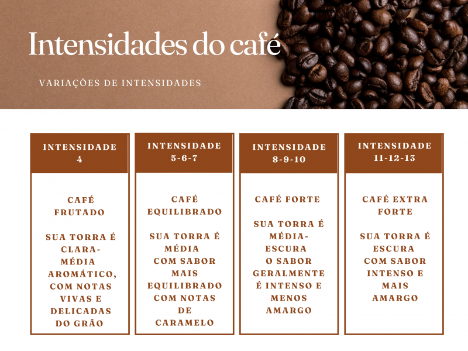

Existem tres tipos de torra de café, a torra clara, a média e a escura, cada uma com suas particularidades e sabor único. Veja a seguir alguns tipos e qualidades de café:
Venha a uma de nossas unidades e conheca as qualidades de café mais pedidas e recomendadas, bem como também uma experiencia única com conforto, qualidade e conhecimento histórico e regional. Venha conferir!